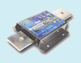
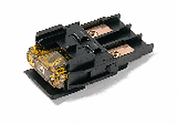

Last Modified: November 4, 2011
Contents: Basics; How Fuses Work; Fuse Size; Circuit Breakers; Power Protectors; Relays; Fuse Blocks;
Installing an amateur transceiver in a vehicle entails a lot of work, and attention to detail. This includes proper wiring, protecting that wiring, and ultimately protecting the equipment as well. Far too often the details are overlooked, or circumvented, resulting is erratic operation, ground loop problems, and other maladies not easily traced or repaired.
Besides the wiring issues, proper fusing is also an important consideration. While the factory wiring harnesses are adequately fused, it is a rare mobile installation that doesn't have some ancillary equipment (antenna controller for example) requiring power. When there is, each device should be fused according to the manufacturer's recommendations. However, let's dispel a few common myths about fuses.
The most common myth is that power cable fuses protect the radio from damage. They don't. Myth number two is, that a fuse will open instantly as soon as the current exceeds the fuse's rating. It won't. Myth number three is, it is always okay to use fuses designed for 120 volts AC, in a nominal 12 volt DC system. It isn't.
This article is an effort to explain away these myths.
The definition of a fuse is relatively simple. It is a wire that melts when subjected to too high of a current. When it does, the circuit opens... hopefully. I say hopefully, because if you've chosen the incorrect size for your application, it may not open. Or, it may open after a long delay. In any case, you want the fuse to do its job, well before your wiring becomes its own fuse!
Fuses are there to protect the cabling (wiring). For example, the Icom IC-7000 has a 5 amp (system) fuse mounted inside the radio, and 30 amp fuses in the cabling (both plus and minus leads). If you short out a supply connection (pin 3 of the tuner port for example), a circuit board trace and/or switching transistor will fail long before the 5 amp fuse opens. The 30 amp fuses will never open in this particular case. It can be argued that the power cable fuses do protect the radio if something fails catastrophically, a final perhaps, but chances are some other component in the circuitry will be damaged beyond repair before the power cable fuse(s) opens, and here is why.
All fuses exhibit a time delay between any given ampere overload, and when the fuse opens. This delay is called Ampere Squared Seconds, and is expressed as I2T. For example, a nominal 20 amp fuse will handle a 30 amp load for about 90 seconds. It will hold a 100 amp load for about 1 second. During this time delay, the fuse element melts, there is a short period of time when an arc occurs, after which the fuse opens the circuit completely.
 The chart at left covers Littelfuse's 299 series fuses (shown below in colors which match their ratings), more commonly called Maxi fuses. They're popular in amateur mobile installations as they are a modern replacement for the older cylindrical style 5ag fuses. They're also available with LED failure indicators.
The chart at left covers Littelfuse's 299 series fuses (shown below in colors which match their ratings), more commonly called Maxi fuses. They're popular in amateur mobile installations as they are a modern replacement for the older cylindrical style 5ag fuses. They're also available with LED failure indicators.
Note that a 30 amp Maxi fuse will take about 3 seconds to open when subjected to a 100 amp load! The same fuse will carry 40 amps for about 2 minutes! As the static temperature goes up, the vertical scale compresses slightly, and in very cold temperatures settings it elongates slightly. So, I2T is the time lag between applying an overload, and the fuse opening to protect the wire. In the mean time, the wire being protected is getting rather warm. If it gets too warm, hot really, it could cause a fire. For a better understanding, let's look at some specific cases.
Most amateur transceivers' DC power cords are built using 10 AWG, or an equivalent (e.g.: Metric 6). Further, most are about 9 feet long, and most are fused with 30 amp fuses. If you subject them to 22 amps of current (nominal input for key down full power), they'll exhibit about a half volt drop (including the drop caused by the internal resistance of the fuse, and that of its holder). This means the power cable will be dissipating about 11 watts.
If we subject the cable to a load of 100 amps (not a dead short) where the fuse would nominally require 3 seconds to open, our voltage drop is 2 volts, and our wire has to sustain 200 watts of dissipation for 3 full seconds! Now you know one of the reasons why it is so important to choose the correct wire size. To reiterate, the wire must be capable of handling the nominal ICAS load with a minimal amount of voltage drop, and yet be capable of handling an impressive overload, albeit briefly.
 At the start of the Wiring article, is a strongly word warning about not using existing vehicle wiring to power an amateur transceiver. Here is why that warning exists! If we apply the same power load described in the last two paragraphs, the voltage drop through the same length #16 (average-sized wiring to an accessory socket) at 22 amps, would be 1.65 volts. This means the wiring is being subjected to 36 watts. At 100 amps, the voltage drop is 7.5 volts, and the wiring is subjected to 750 watts of dissipation until the fuse opens in about 1 second. It should noted that vehicle wiring is bundled, and the dissipation is additive between them. Thus, one second may appear to be a safe time limit, it is not a guarantee, especially if the average current has already warmed the wire up.
At the start of the Wiring article, is a strongly word warning about not using existing vehicle wiring to power an amateur transceiver. Here is why that warning exists! If we apply the same power load described in the last two paragraphs, the voltage drop through the same length #16 (average-sized wiring to an accessory socket) at 22 amps, would be 1.65 volts. This means the wiring is being subjected to 36 watts. At 100 amps, the voltage drop is 7.5 volts, and the wiring is subjected to 750 watts of dissipation until the fuse opens in about 1 second. It should noted that vehicle wiring is bundled, and the dissipation is additive between them. Thus, one second may appear to be a safe time limit, it is not a guarantee, especially if the average current has already warmed the wire up.
One, often asked question is; if the radio draws just 20 amps peak, why not use a 20 amp fuse instead? Here's why. Subjecting any given fuse to instantaneous loads close to their current rating will eventually cause them to fail. Depending on the load characteristics (steady or varying), fuses are sized from 25% to 50% larger than their impressed loads. It is important to remember that a fuse protects the circuit by melting the fuse element. Therefore, ambient temperature, the type of fuse, the fuse holder it is mounted in, and even the contact material all have an affect on how hot the element gets.
In some cases, peak loads will exceed the rating of the fuse, like those encountered when starting an electric motor. Depending on the application, the designer may use a slow-blow fuse with an appropriately longer I2T rating. However, in an amateur application, it is only necessary to keep the average current draw below about 60% of the rating for any given fuse to avoid element fatigue.
The correct wire size should be based on the peak current, not the average, if you want to keep I2R losses low. In any case, should a dead short occur, the wire size needs to be large enough to carry the current imposed by the fuse's I2T delay without exceeding the wire's temperature rating. After all, you don't want the wire acting as its own fuse!
As stated, part of the sizing calculation is the temperature rating the protected wire is designed for, as well as its ambient operating conditions. In other words, the fuse must open before the wire reaches its maximum rating for any given overload. Remember, underhood wiring should have a temperature rating of at least 90C, and preferably 105C.
For any given ampere rating, fuses designed for high voltage (nominal 250 volts maximum) service typically have lower resistance than those designed for low voltage (nominally 32 volts maximum). Thus, their low voltage I2T is elongated, which means they take longer to open under a given overload. While these facts alone don't preclude their use in low voltage applications, the bottom line is, you should select fuses specifically designed for the voltage range in use.
Lastly, fuses protecting your wiring should be as close to the battery as possible. Remember, that short length of wire from the battery to the fuses is NOT protected. It should be mounted out of harms way (in case of a crash), and protected with an outer sheathe such as plastic split loom.
If you're thinking out loud to yourself with the admonition, I use circuit breakers, so I don't have this problem, you're kidding yourself! Fact is, circuit breakers exhibit a much longer I2T than any fuse except some specially designed slow-blow fuses. What's more, most circuit breakers will fail closed on dead shorts if the current exceeds 2,000 amps or so. A standard SLI (Starting, Lights, Ignition) car battery in good condition can easily supply 3,000 amps to a dead short, and an AGM as much as 4,000 amps!
Oh, but I use marine rated breakers, and they're different! No they're not! The same goes for aircraft-rated breakers, and (non-FET) power relays. Think of it this way, they have contacts, and the contacts open when an overload occurs. A few microseconds after they begin to trip, while the contacts are still very close together, enough metal may evaporate (if the current is high enough) from the contacts to continue the arc once the contacts are at their greatest spacing. Thus, all protection is lost!
A fuse, on the other hand, has a much greater arc length, and if properly sized will easily quench dead short arcs. Some fuses, typically line voltage types, are filled with an arc-quenching material as an added precaution. The bottom line is, no breaker can provide the same level of safety a properly-sized fuse is capable of.
By the way, using a circuit breaker as on/off switch is a waste of resources in more ways than one.
 West Mountain Radio manufactures two devices for those folks who power their radios directly from a nominal 12 volt supply; mobile in other words, especially stationary mobile.
West Mountain Radio manufactures two devices for those folks who power their radios directly from a nominal 12 volt supply; mobile in other words, especially stationary mobile.
 The PWRcheck® properly assesses, and monitors your backup battery load. It can handle up to 40 amp of load, and has 13 display modes including voltage, current, wattage, and amp-hours, replete with programmable alarms! And of course, it uses 40A Powerpole® connectors for both source and load. It has a backlit LCD, stores up to 174,000 sample points for data logging (that's over 4 months worth), and includes PC software for real-time monitoring, data download, and charting. If you're into fixed, and/or portable operation, it is just the ticket!
The PWRcheck® properly assesses, and monitors your backup battery load. It can handle up to 40 amp of load, and has 13 display modes including voltage, current, wattage, and amp-hours, replete with programmable alarms! And of course, it uses 40A Powerpole® connectors for both source and load. It has a backlit LCD, stores up to 174,000 sample points for data logging (that's over 4 months worth), and includes PC software for real-time monitoring, data download, and charting. If you're into fixed, and/or portable operation, it is just the ticket!
The device shown at right is their PWRguard®. It contains a 40 amp, high-power FET switch (no relays here!) which control circuitry activate. If the input voltage drops below 11.5 VDC, or goes above 15 VDC, the PWRguard® shuts off the output power. Although aimed at the battery powered crowd, it does in fact have applications in the portable, and mobile market places.
Both devices are available from PowerWerx, and other fine amateur radio dealers.

If you operate as a portable (not in motion), some form of isolation might be warranted. However, a relay is not the best choice. As pointed out in the Alternators & Batteries article, there are better isolation choices.
If you're just after a relay, Perfect Switch has what you need. Their solid state relay is based on FET technology, and doesn't have the overload arc problem electromagnetic relays do. The forward voltage drop is all but nonexistent (< .030 volts) even under full load currents (from 100 to 500 amps). Exceed their rating, and they automatically disconnect the load. However, they shouldn't be relied on to serve as a properly sized fuse.
Perfect Switch also makes a programmable version which acts very similar to the aforementioned power protectors. They're not inexpensive, but for high amperage loads, they're one of the few choices.

 One very popular way of powering multiple ancillary devices is West Mountain Radio's RigRunner series. The unit shown has a main fuse, and five separately fused circuits. This particular one has a maximum rating of 40 amps. They use the very-popular Anderson Power Pole connectors (PP), which makes wiring easy.
One very popular way of powering multiple ancillary devices is West Mountain Radio's RigRunner series. The unit shown has a main fuse, and five separately fused circuits. This particular one has a maximum rating of 40 amps. They use the very-popular Anderson Power Pole connectors (PP), which makes wiring easy.
They're typically wired directly to the battery and/or jump points, just like a transceiver should be. And like a transceiver, their leads (negative and positive) need to be fused close to the battery connections to protect the wiring should a short occur.
 Anderson Power Pole® connectors come is a variety of colors. In fact, Anderson recommends specific colors for specific voltages. Almost universally, amateur use is restricted to nominal 13.8 volts DC, but we can still use the colors to our advantage. Seven of the colors match the ATO fuse colors supplied with the aforementioned RigRunner®. Thus using matching colors, helps assure that you plug each ancillary device into their respective fuse size. Call it a safety factor.
Anderson Power Pole® connectors come is a variety of colors. In fact, Anderson recommends specific colors for specific voltages. Almost universally, amateur use is restricted to nominal 13.8 volts DC, but we can still use the colors to our advantage. Seven of the colors match the ATO fuse colors supplied with the aforementioned RigRunner®. Thus using matching colors, helps assure that you plug each ancillary device into their respective fuse size. Call it a safety factor.

 DigiKey, Fastenal, Mouser Electronics, and PowerWerx all carry a wide variety of fuse holders. However, for high-amperage loads, I prefer the Littelfuse MAB1 holders (at upper right), and here's why. Every Maxifuse holder I have seen has molded in pigtails. The largest wire size available is size 8 which is too small for for loads over 50 amps, the need for butt splices notwithstanding. Although the MAB1 is a discontinued item, Newark.com has a large supply on hand. They cost about $35 with a clear plastic cover (not shown).
DigiKey, Fastenal, Mouser Electronics, and PowerWerx all carry a wide variety of fuse holders. However, for high-amperage loads, I prefer the Littelfuse MAB1 holders (at upper right), and here's why. Every Maxifuse holder I have seen has molded in pigtails. The largest wire size available is size 8 which is too small for for loads over 50 amps, the need for butt splices notwithstanding. Although the MAB1 is a discontinued item, Newark.com has a large supply on hand. They cost about $35 with a clear plastic cover (not shown).
 An alternative to the Littelfuse MAB1, is the Bluesea Systems Maxi Fuse Block. They're sold by West Marine, and other full-line marine retailers. It will hold wire sizes up to #4 gauge wire which is adequate for most installations, even high power ones. However, the wire is clamped in using set screws, all but negating the use of high-strand wire, like welding cable, unless you have a solder pot. Like the MAB1, it does come with a protective cover, albeit a bit larger in size. The cover is available in both read, and black.
An alternative to the Littelfuse MAB1, is the Bluesea Systems Maxi Fuse Block. They're sold by West Marine, and other full-line marine retailers. It will hold wire sizes up to #4 gauge wire which is adequate for most installations, even high power ones. However, the wire is clamped in using set screws, all but negating the use of high-strand wire, like welding cable, unless you have a solder pot. Like the MAB1, it does come with a protective cover, albeit a bit larger in size. The cover is available in both read, and black.
If you're not into PP connectors, you might want to look into the Centech line of products. Their AP-1 is shown at left. Under the cover are heavy-duty connectors for the primary wire, and a screw terminal block for the secondary wires. There are more photos on their web site.
{kind=link}
{kind=link}